kaijing.ma [at] utexas [dot] edu
mkj3085003 [at] gmail [dot] com
Scholar
Github
Twitter
I am a first-year Ph.D. student in Computer Science at The University of Texas at Austin,
co-advised by Prof. Qiang Liu Prof. Atlas Wang
My current interests include long-horizon agents ,
recursive self-improvement , LLM reasoning ,
mechanistic interpretability , and embodied intelligence .
Before UT Austin, I received my B.S. in Computer Science and Technology from Tongji University.
I am grateful to the mentors and collaborators I have met along the way , especially the
MAP Open Source Community
Outside of research, I love tinkering, building quirky side projects, and exploring anything that sparks my curiosity.
News
2026.08 Excited to start my Ph.D. in Computer Science at UT Austin.
Publications
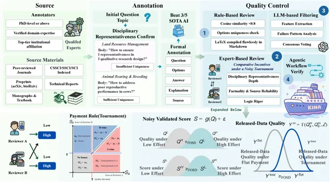
Knowledge Index of Noah's Ark
Sheng Jin, Minghao Liu, Yunze Xiao, Zeqi Zhou, Heli Qi, Yifan Yao, Meishu Song, Kaijing Ma , et al.
show all authors
Sheng Jin, Minghao Liu, Yunze Xiao, Zeqi Zhou, Heli Qi, Yifan Yao, Meishu Song, Kaijing Ma , Xuan Zhang, Sicong Jiang, Yizhe Li, Ningshan Ma, Jie Wei, Ziniu Li, Minglai Yang, Bangya Liu, Yiming Liang, Xiao Fang, Qingcheng Zeng, Jiarui Liu, Rui Yang, Shen Yan, Wenhao Huang, Jiaheng Liu, Zihan Wang, Weihao Xuan, Ge Zhang
arXiv preprint arXiv:2606.05104
webpage
arXiv
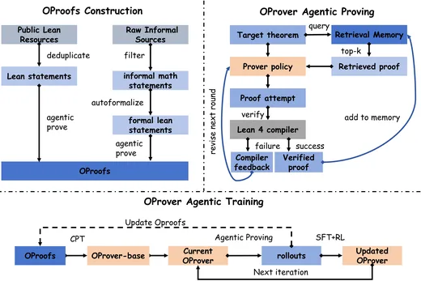
OProver: A Unified Framework for Agentic Formal Theorem Proving
David Ma, Kaijing Ma , Shawn Guo, Yunfeng Shi, Enduo Zhao, Jiajun Shi, Zhaoxiang Zhang, Gavin Cheung, Jiaheng Liu, Zili Wang
arXiv preprint arXiv:2605.17283
webpage
arXiv
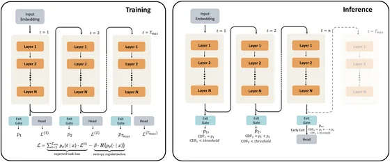
Scaling Latent Reasoning via Looped Language Models
Rui-Jie Zhu, Zixuan Wang, Kai Hua, Tianyu Zhang, Ziniu Li, Haoran Que, Kaijing Ma , et al.
show all authors
Rui-Jie Zhu, Zixuan Wang, Kai Hua, Tianyu Zhang, Ziniu Li, Haoran Que, Boyi Wei, Zixin Wen, Fan Yin, He Xing, Lu Li, Jiajun Shi, Kaijing Ma , Shanda Li, Taylor Kergan, Andrew Smith, Xingwei Qu, Mude Hui, Bohong Wu, Qiyang Min, Hongzhi Huang, Xun Zhou, Wei Ye, Jiaheng Liu, Jian Yang, Yunfeng Shi, Chenghua Lin, Enduo Zhao, Tianle Cai, Ge Zhang, Wenhao Huang, Yoshua Bengio, Jason Eshraghian
arXiv preprint arXiv:2510.25741
webpage
arXiv
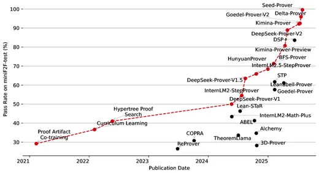
Seed-Prover: Deep and Broad Reasoning for Automated Theorem Proving
Luoxin Chen, Jinming Gu, Liankai Huang, Wenhao Huang, Zhicheng Jiang, Kaijing Ma , et al.
show all authors
Luoxin Chen, Jinming Gu, Liankai Huang, Wenhao Huang, Zhicheng Jiang, Allan Jie, Xiaoran Jin, Xing Jin, Chenggang Li, Kaijing Ma , Cheng Ren, Jiawei Shen, Wenlei Shi, Tong Sun, He Sun, Jiahui Wang, Siran Wang, Zhihong Wang, Chenrui Wei, Shufa Wei, Yonghui Wu, Yuchen Wu, Yihang Xia, Huajian Xin, Fan Yang, Huaiyuan Ying, Hongyi Yuan, Zheng Yuan, Tianyang Zhan, Chi Zhang, Yue Zhang, Ge Zhang, Tianyun Zhao, Jianqiu Zhao, Yichi Zhou, Thomas Hanwen Zhu
arXiv preprint arXiv:2507.23726
webpage
arXiv
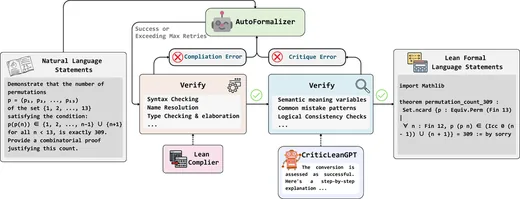
CriticLean: Critic-Guided Reinforcement Learning for Mathematical Formalization
Zhongyuan Peng, Yifan Yao, Kaijing Ma , et al.
show all authors
Zhongyuan Peng, Yifan Yao, Kaijing Ma , Shuyue Guo, Yizhe Li, Yichi Zhang, Chenchen Zhang, Yifan Zhang, Zhouliang Yu, Luming Li, Minghao Liu, Yihang Xia, Jiawei Shen, Yuchen Wu, Yixin Cao, Zhaoxiang Zhang, Wenhao Huang, Jiaheng Liu, Ge Zhang
ACL Main 2026
webpage
arXiv
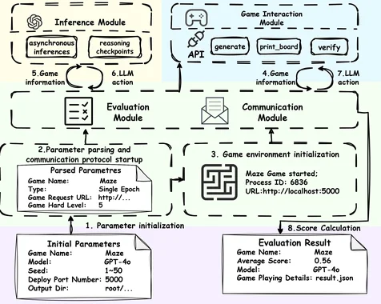
KORGym: A Dynamic Game Platform for LLM Reasoning Evaluation
Jiajun Shi, Jian Yang, Jiaheng Liu, Xingyuan Bu, Jiangjie Chen, Junting Zhou, Kaijing Ma , et al.
show all authors
Jiajun Shi, Jian Yang, Jiaheng Liu, Xingyuan Bu, Jiangjie Chen, Junting Zhou, Kaijing Ma , Zhoufutu Wen, Bingli Wang, Yancheng He, Liang Song, Hualei Zhu, Shilong Li, Xingjian Wang, Wei Zhang, Ruibin Yuan, Yifan Yao, Wenjun Yang, Yunli Wang, Siyuan Fang, Siyu Yuan, Qianyu He, Xiangru Tang, Yingshui Tan, Wangchunshu Zhou, Zhaoxiang Zhang, Zhoujun Li, Wenhao Huang, Ge Zhang
NeurIPS Spotlight 2025
webpage
arXiv
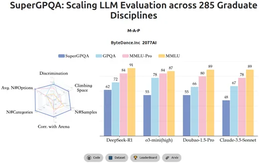
SuperGPQA: Scaling LLM Evaluation across 285 Graduate Disciplines
M-A-P Team, Xinrun Du, Yifan Yao, Kaijing Ma , et al.
show all authors
M-A-P Team, Xinrun Du, Yifan Yao, Kaijing Ma , Bingli Wang, Tianyu Zheng, King Zhu, Minghao Liu, Yiming Liang, Xiaolong Jin, Zhenlin Wei, Chujie Zheng, Kaixin Deng, Shawn Gavin, Shian Jia, Sichao Jiang, Yiyan Liao, Rui Li, Qinrui Li, Sirun Li, Yizhi Li, Yunwen Li, David Ma, Yuansheng Ni, Haoran Que, Qiyao Wang, Zhoufutu Wen, Siwei Wu, Tyshawn Hsing, Ming Xu, Zhenzhu Yang, Zekun Moore Wang, Junting Zhou, Yuelin Bai, Xingyuan Bu, Chenglin Cai, Liang Chen, Yifan Chen, Chengtuo Cheng, Tianhao Cheng, Keyi Ding, Siming Huang, Yun Huang, Yaoru Li, Yizhe Li, Zhaoqun Li, Tianhao Liang, Chengdong Lin, Hongquan Lin, Yinghao Ma, Tianyang Pang, Zhongyuan Peng, Zifan Peng, Qige Qi, Shi Qiu, Xingwei Qu, Shanghaoran Quan, Yizhou Tan, Zili Wang, Chenqing Wang, Hao Wang, Yiya Wang, Yubo Wang, Jiajun Xu, Kexin Yang, Ruibin Yuan, Yuanhao Yue, Tianyang Zhan, Chun Zhang, Jinyang Zhang, Xiyue Zhang, Xingjian Zhang, Yue Zhang, Yongchi Zhao, Xiangyu Zheng, Chenghua Zhong, Yang Gao, Zhoujun Li, Dayiheng Liu, Qian Liu, Tianyu Liu, Shiwen Ni, Junran Peng, Yujia Qin, Wenbo Su, Guoyin Wang, Shi Wang, Jian Yang, Min Yang, Meng Cao, Xiang Yue, Zhaoxiang Zhang, Wangchunshu Zhou, Jiaheng Liu, Qunshu Lin, Wenhao Huang, Ge Zhang
NeurIPS 2025
webpage
arXiv
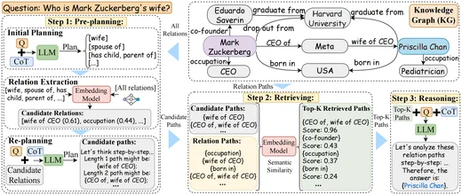
KARPA: A Training-free Method of Adapting Knowledge Graph as References for Large Language Model's Reasoning Path Aggregation
Siyuan Fang, Kaijing Ma , Tianyu Zheng, Xinrun Du, Ningxuan Lu, Ge Zhang, Qingkun Tang
ACL Findings 2025
webpage
arXiv
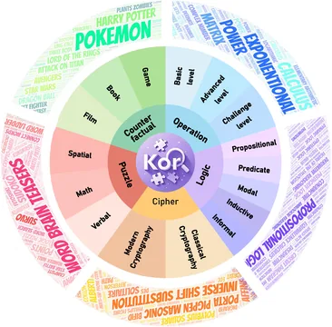
KOR-Bench: Benchmarking Language Models on Knowledge-Orthogonal Reasoning Tasks
Kaijing Ma , Xinrun Du, Yunran Wang, Haoran Zhang, Zhoufutu Wen, Xingwei Qu, Jian Yang, Jiaheng Liu, Minghao Liu, Xiang Yue, Wenhao Huang, Ge Zhang
ICLR 2025
webpage
arXiv
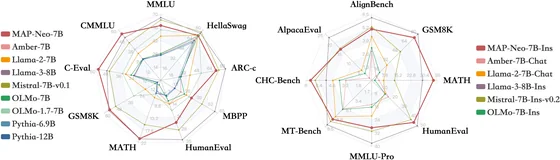
MAP-Neo: Highly Capable and Transparent Bilingual Large Language Model Series
Ge Zhang, Scott Qu, Jiaheng Liu, Chenchen Zhang, Chenghua Lin, Kaijing Ma , et al.
show all authors
Ge Zhang, Scott Qu, Jiaheng Liu, Chenchen Zhang, Chenghua Lin, Chou Leuang Yu, Danny Pan, Esther Cheng, Jie Liu, Qunshu Lin, Raven Yuan, Tuney Zheng, Wei Pang, Xinrun Du, Yiming Liang, Yinghao Ma, Yizhi Li, Ziyang Ma, Bill Lin, Emmanouil Benetos, Huan Yang, Junting Zhou, Kaijing Ma , Minghao Liu, Morry Niu, Noah Wang, Quehry Que, Ruibo Liu, Sine Liu, Shawn Guo, Soren Gao, Wangchunshu Zhou, Xinyue Zhang, Yizhi Zhou, Yubo Wang, Yuelin Bai, Yuhan Zhang, Yuxiang Zhang, Zenith Wang, Zhenzhu Yang, Zijian Zhao, Jiajun Zhang, Wanli Ouyang, Wenhao Huang, Wenhu Chen
arXiv preprint arXiv:2405.19327
webpage
arXiv
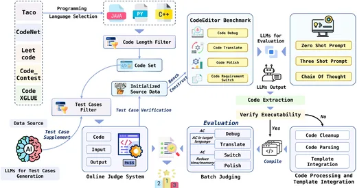
CodeEditorBench: Evaluating Code Editing Capability of Large Language Models
Jiawei Guo, Ziming Li, Xueling Liu, Kaijing Ma , et al.
show all authors
Jiawei Guo, Ziming Li, Xueling Liu, Kaijing Ma , Tianyu Zheng, Zhouliang Yu, Ding Pan, Yizhi Li, Ruibo Liu, Yue Wang, Shuyue Guo, Xingwei Qu, Xiang Yue, Ge Zhang, Wenhu Chen, Jie Fu
ICLR 2025 Third Workshop on Deep Learning for Code
webpage
arXiv
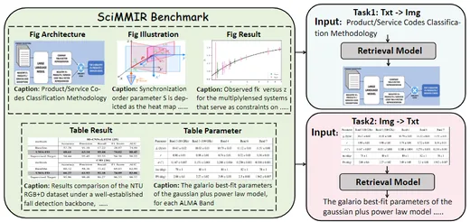
SciMMIR: Benchmarking Scientific Multi-modal Information Retrieval
Siwei Wu, Yizhi Li, Kang Zhu, Ge Zhang, Yiming Liang, Kaijing Ma , et al.
show all authors
Siwei Wu, Yizhi Li, Kang Zhu, Ge Zhang, Yiming Liang, Kaijing Ma , Chenghao Xiao, Haoran Zhang, Bohao Yang, Wenhu Chen, Wenhao Huang, Noura Al Moubayed, Jie Fu, Chenghua Lin
ACL Findings 2024
webpage
arXiv
{kind=link}